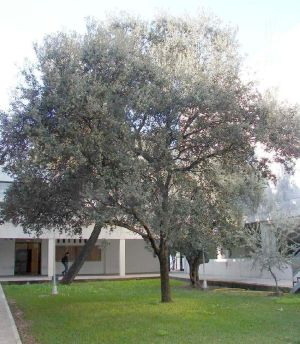
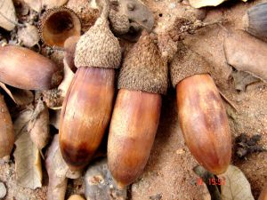

Flora ornamental del Campus de Reina Mercedes, Universidad de
Sevilla - Ficha nº 59 - Versión 1
|
Quercus rotundifolia
Lam., Encycl. 1: 723 (1785) |
Fagáceas |
| Encina
meridional, carrasca |
Árbol perennifolio |
|
Árbol perennifolio, monoico, 8,4 m de altura, pudiendo alcanzar 15 m (1), de copa redondeada, tronco corto con 93 cm de cuerda y corteza resquebrajada de color gris pardusca. Hojas simples, alternas, pecioladas; pecíolo 3-10 cm; lámina 3-6 cm, oblongo-elípticas o elípticas, enteras o dentadas, las de las ramas jóvenes con el borde espinoso, con protuberancias, 3 pares de nervios laterales, de color verde oscuro en el haz y grisáceo en el envés. Inflorescencias masculinas en forma de amentos densos, las femeninas reducidas de 1-2 flores. Flores unisexuales, las masculinas con periantio de 3-5 lóbulos anchos, obtusos; estambres con anteras mucronadas; flores femeninas con pedicelo pubescente, periantio formado por 6 lóbulos pelosos. Florece entre marzo y mayo. Fruto tipo
núcula
(bellota), de 5-7cm, de color marrón oscuro en la
madurez, puntiagudo, con cúpula de 2-3 cm en la base,
de aspecto
escamoso, que cubre menos de la mitad del fruto.
Madura en octubre y
noviembre. |
 Foto: Juan de Dios Franco Navarro, 2006. |
|  Foto: Juan de Dios Franco Navarro,
2007. |
Observaciones:
Quercus, nombre latino de la encina, roble, etc. iIex, nombre latino de la encina. Son árboles muy resistentes a la sequía. Las bellotas se utilizan como alimento de hombres y ganado. La madera es buena para hacer carbón. La corteza y hojas de la encina poseen propiedades astringentes y cicatrizantes por su contenido en taninos. |
|
Área de origen.- Península Ibérica y norte de Marruecos, habiéndose citado de modo puntual en el sur de Francia y en las islas del Mediterráneo Occidental. |
|
| Uso en el campus: un
solo ejemplar
como árbol ornamental. |
Localización:
E.T.S.
Ingeniería
Informática - Patio Sur |
| (1) G. López González in Castroviejo & al. (eds.) Flora Iberica | |
| Ángel Jiménez Jiménez (2006) & Carlos Romero Zarco (2007) | |